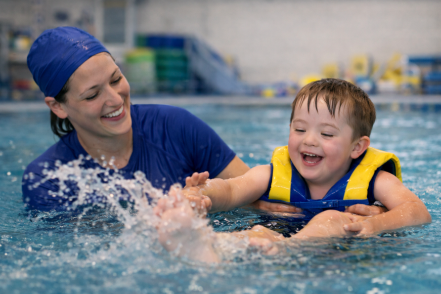
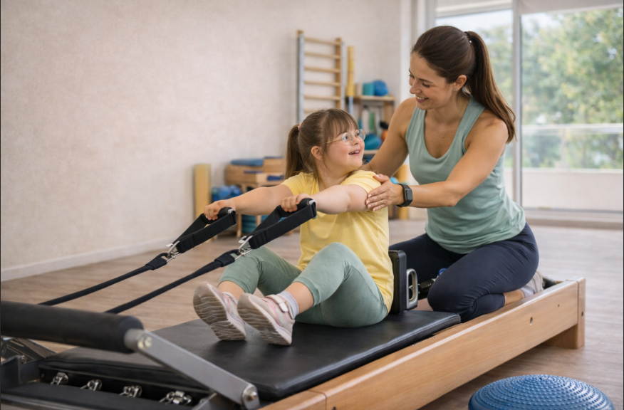
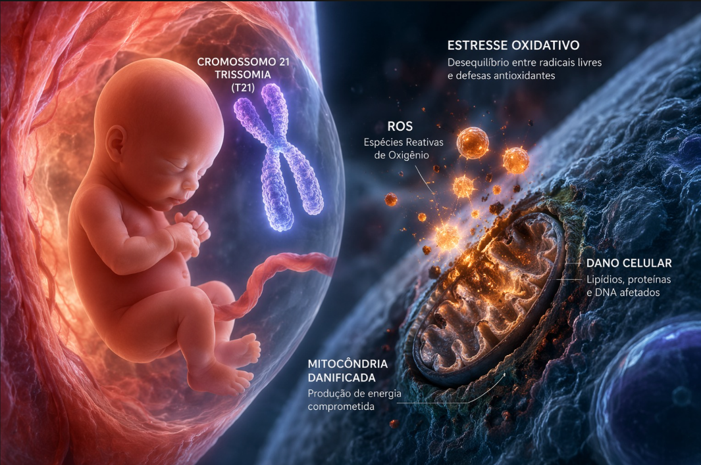

Quem somos
Um projeto dedicado à inclusão, informação acessível e apoio às famílias.
Um espaço pensado para compartilhar conteúdos acessíveis, sensíveis e confiáveis sobre inclusão, desenvolvimento infantil e apoio à rotina familiar.

O Elo Saúde aproxima famílias de conteúdos confiáveis, acolhedores e organizados para fortalecer a jornada do desenvolvimento infantil.
Um projeto dedicado à inclusão, informação acessível e apoio às famílias.
Levar conhecimento baseado em evidências com linguagem humana e sensível.
Promover acolhimento, informação e cuidado além do diagnóstico.
Aqui você pode publicar matérias, textos educativos e conteúdos especiais do projeto.

O Elo Saúde nasce com a proposta de reunir conteúdos que apoiam mães, pais e cuidadores na busca por orientação com mais clareza, leveza e responsabilidade.






Espaço ideal para destacar vídeos curtos, conteúdos educativos e materiais especiais.

Uma área preparada para divulgar vídeos do Elo Saúde de forma profissional.
Assistir vídeo
Você pode trocar esse link pelo YouTube ou pela página do vídeo no site.
Ver conteúdoEntre em contato, envie sugestões e acompanhe os canais do projeto.
Envie dúvidas, ideias e propostas.
elosaudeconexao@gmail.comAcompanhe vídeos e conteúdos audiovisuais do projeto.
Ir para o YouTubeCompartilhe a mensagem do projeto com mais pessoas.